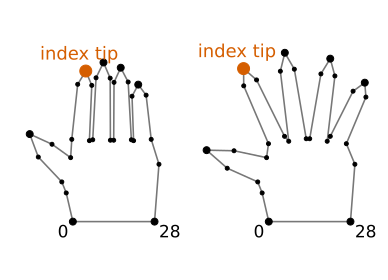
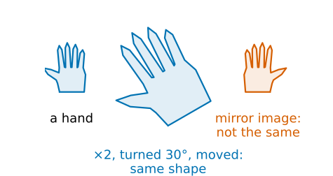
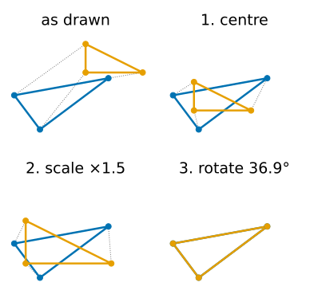
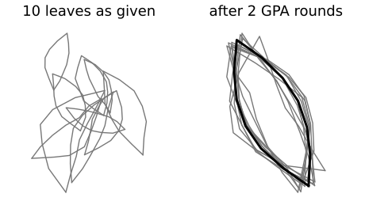
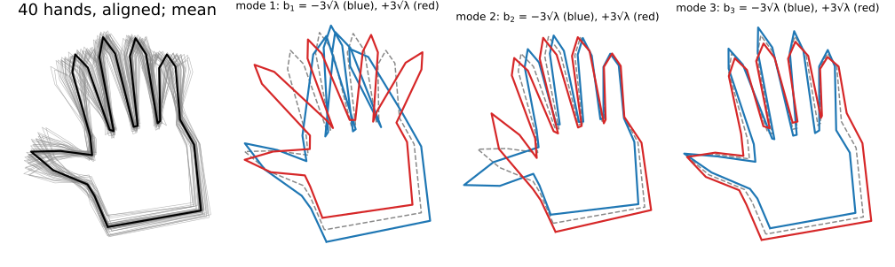
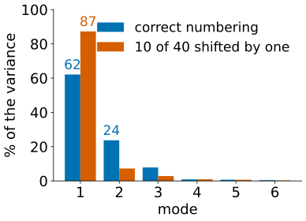

A snake knows only “smooth”. A hand, a leaf, a vertebra or a nucleus has a characteristic shape, and we can learn it from examples (Cootes & Taylor: “smart snakes”).
Landmarks: the same points marked on every example; a shape is a vector of 2n numbers.
Shape is what is left after removing position, size and rotation: Procrustes alignment.
Generalised Procrustes: align a whole training set to its mean.
PCA of the aligned landmarks: the modes of variation, each one moving all landmarks together.
A point distribution model\mathbf x = \bar{\mathbf x} + \Phi\mathbf b generates plausible shapes; and what breaks it.
Slides titled The math give the formulas and proofs; the ideas are complete without them.
Landmarks
Mark ncorresponding points on every training shape: the tip of each finger, the base of a leaf, plus evenly spaced points in between.
A shape is one vector: \mathbf x = (x_1, y_1, x_2, y_2, \dots, x_n, y_n) \in \mathbb R^{2n}. A hand with 29 landmarks is one point in 58 dimensions.
Correspondence is the whole point: landmark 7 must be the tip of the index finger on every hand. Then averaging and comparing shapes landmark by landmark makes sense.
It is also the hard part: done by hand in practice, or by methods that choose the points automatically (minimum description length), which we do not cover.
This lecture uses synthetic families (hands, nuclei, leaves) generated from a few hidden parameters, so the landmarks correspond by construction.

Two of the synthetic hands: 29 landmarks each, larger dots at tips and wrist.
What is “shape”?
Two hands, one twice as large, turned by 30° and in another place in the image: they have the same shape.
Shape = the geometry that remains after removing translation, scale and rotation (Kendall). Reflection is usually not removed: a left hand is not a right hand.
To compare shapes, first bring them into the same position, size and orientation: align them.
The best alignment of one landmark set onto another, in the least-squares sense, is Procrustes analysis.

Procrustes: three steps
Align the orange set onto the blue one, minimising the sum of squared distances between corresponding landmarks:
Centre: move the orange set so its centroid lands on the blue centroid.
Scale: stretch it about its centroid.
Rotate: turn it about its centroid.
For a triangle (0,0), (2,0), (0,1) and a copy turned by 36.9°, made 1.5 times larger and moved, the three steps recover exactly that: scale 1.5, angle 36.9°, remaining error 0. With noise, or a wrong landmark, the best fit leaves an error.
In 2D the scale and the rotation together are one matrix \begin{pmatrix} a & -b \\ b & a\end{pmatrix}, with scale \sqrt{a^2 + b^2} and angle \operatorname{atan2}(b, a): the similarity matrices of Images as arrays & geometric transforms. The triangle: a = 1.2, b = 0.9.

The math: Procrustes in closed form
Centre both sets: \mathbf p_i (orange), \mathbf q_i (blue), \sum\mathbf p_i = \sum\mathbf q_i = 0. Minimise over a, b:
\sum_i \left|\begin{pmatrix} a & -b \\ b & a\end{pmatrix}\mathbf p_i - \mathbf q_i\right|^2.
This is linear least squares in (a, b). Setting the two derivatives to zero:
a = \frac{\sum_i \mathbf p_i\cdot\mathbf q_i}{\sum_i|\mathbf p_i|^2}, \qquad b = \frac{\sum_i (p_{i,x}q_{i,y} - p_{i,y}q_{i,x})}{\sum_i|\mathbf p_i|^2}.
The translation is the difference of the centroids (after applying the matrix). Triangle: \sum|\mathbf p|^2 = 10/3, \sum\mathbf p\cdot\mathbf q = 4, \sum cross = 3: a = 1.2, b = 0.9.
Rigid fit (no scaling): same angle, (a, b)/\sqrt{a^2 + b^2}.
Any dimension (3D shapes): the rotation is R = UV^\top from the SVD U\Sigma V^\top of the cross-covariance \sum_i\mathbf q_i\mathbf p_i^\top, with the sign of the last column of U flipped if \det(UV^\top) < 0, to forbid a reflection (Umeyama, 1991). In 2D this gives the same answer as the formula.
Try it: Procrustes, step by step
Aligning a whole training set
Generalised Procrustes analysis (Gower, 1975):
Centre every shape and scale it to size 1.
Take one shape as the first guess of the mean.
Align every shape to the mean (Procrustes).
New mean = the average of the aligned shapes; scale it to size 1 and fix its orientation (align it to the first guess).
Repeat 3–4 until the mean stops changing: usually 2–3 rounds.

Ten leaves in random positions, sizes and orientations: the sum of squared distances to the mean drops from 4.86 to 0.163 in the first round, and to 0.161 in the second; after that the mean changes by less than 10^{-9}.
Recall: PCA (day 1)
From the PCA unit (pca/): a cloud of points, its mean, its covariance matrixS; the eigenvectors of S are the principal axes, the eigenvalues (largest first) the variances along them. Keep the first few axes, and every point is the mean plus a few scores times the axes.
Here every point of the cloud is a whole aligned shape, in \mathbb R^{2n} instead of \mathbb R^2. Nothing else changes.
Modes of variation
The mean shape\bar{\mathbf x}: the average of the aligned shapes, landmark by landmark.
The eigenvectors \boldsymbol\phi_1, \boldsymbol\phi_2, \dots of the 2n \times 2n covariance matrix: each is a whole-shape deformation, in which all landmarks move together (spread the fingers, bend the nucleus, widen the leaf).
Its eigenvalue \lambda_k is the variance of the training shapes along it: how much of the variation it explains.
A point distribution model (PDM): \mathbf x \approx \bar{\mathbf x} + b_1\boldsymbol\phi_1 + \dots + b_k\boldsymbol\phi_k = \bar{\mathbf x} + \Phi\mathbf b, with a few numbers \mathbf b per shape.
Plausible shapes: each |b_j| \le 3\sqrt{\lambda_j} (three standard deviations).
Modes of a hand

40 synthetic hands, generated from 3 hidden parameters (finger spread, thumb angle, finger length) plus small landmark noise. After alignment, 3 modes carry 93.7 % of the variance (62.1, 23.7 and 7.8 %); every further mode under 1 %.
The math: the point distribution model
Aligned training shapes \mathbf x_1, \dots, \mathbf x_s \in \mathbb R^{2n}, mean \bar{\mathbf x}, covariance (divided by s, as in the PCA unit)
Keep k modes with \sum_{j \le k}\lambda_j \ge 0.95\sum_j\lambda_j (or 0.98). \Phi = (\boldsymbol\phi_1 \cdots \boldsymbol\phi_k) has orthonormal columns.
Generate: \mathbf x = \bar{\mathbf x} + \Phi\mathbf b. Project (change of basis, as for the DFT): \mathbf b = \Phi^\top(\mathbf x - \bar{\mathbf x}); \bar{\mathbf x} + \Phi\mathbf b is the closest model shape (least squares).
Over the training set b_j has mean 0 and variance \lambda_j: the bound |b_j| \le 3\sqrt{\lambda_j}, or a Mahalanobis bound \sum_j b_j^2/\lambda_j \le D_\text{max}^2.
With s < 2n shapes, at most s - 1 eigenvalues are non-zero. Then diagonalise the small s \times s matrix \frac1s Y^\top Y (Y = centred shapes as columns): if Y^\top Y\mathbf u = \mu\mathbf u, then Y\mathbf u is an eigenvector of YY^\top with the same eigenvalue.
Try it: a shape model of hands
When the model misleads
Bad correspondence: if some shapes are numbered one landmark off, the “variation” between landmark 7 and its neighbour becomes the largest mode. In the hand demo, 10 misnumbered hands out of 40 push mode 1 from 62 % to 87 %.
No alignment: position, size and orientation become the first modes, and the real shape variation is mixed into them.
Too few shapes: s shapes give at most s - 1 modes, and those are mostly the quirks of these few examples.
Curved motion: a finger bending at a joint moves its tip along an arc; a linear model needs several modes for one bend, and \pm3\sqrt\lambda can produce straightened or stretched fingers.
Unlimited \mathbf b: far outside \pm3\sqrt\lambda the model draws shapes no hand has.

The hand model of the demo, with and without misnumbered shapes.
Summary
A shape: n corresponding landmarks, a vector in \mathbb R^{2n}. Correspondence is the hard, manual part.
Procrustes removes position, size and rotation: in 2D a linear least-squares fit of \begin{pmatrix} a & -b \\ b & a\end{pmatrix} and a translation; in general an SVD.
GPA aligns a set to its mean in a few rounds.
PCA of the aligned shapes: mean shape plus modes, whole-shape deformations ordered by variance.
PDM: \mathbf x = \bar{\mathbf x} + \Phi\mathbf b, \mathbf b = \Phi^\top(\mathbf x - \bar{\mathbf x}), plausible for |b_j| \le 3\sqrt{\lambda_j}.
Check correspondence and alignment first; a linear model has trouble with bending.